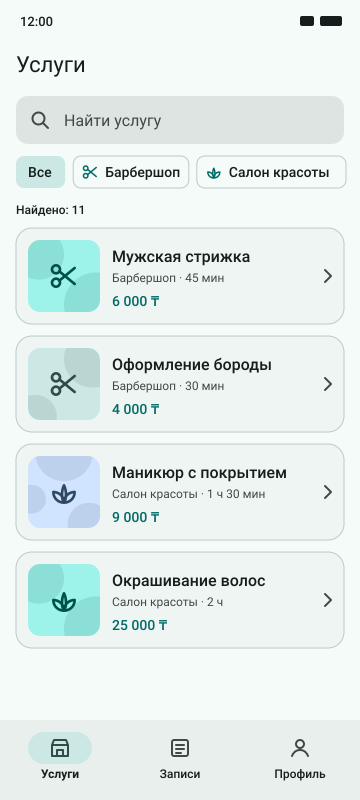
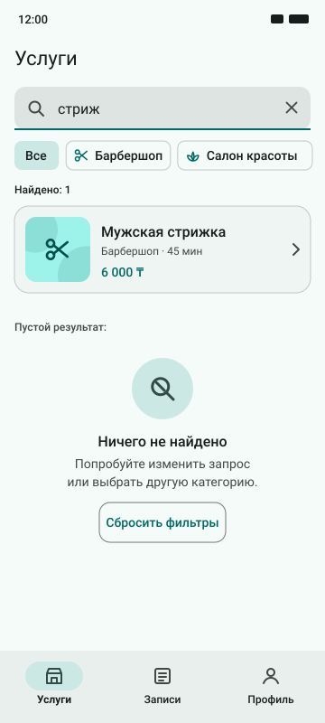
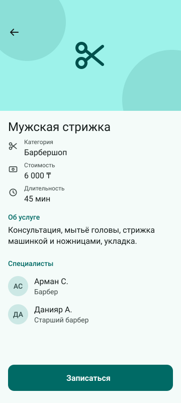
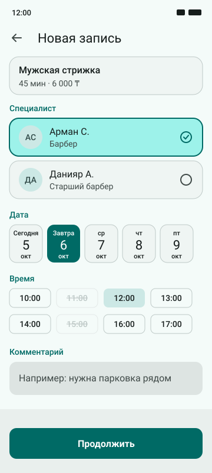
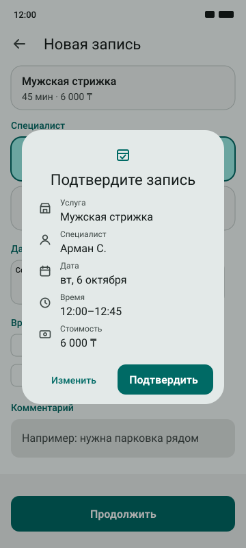
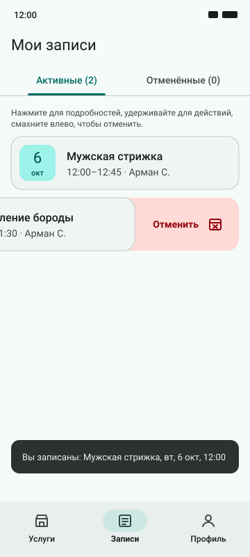
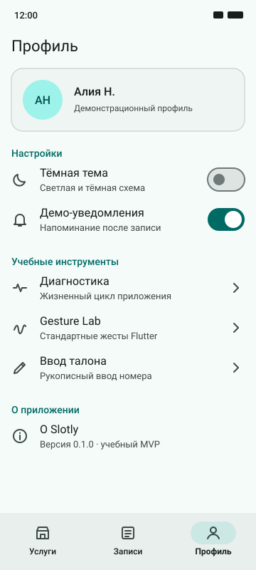

Самостоятельная работа: дизайн-прототип
Интерактивный прототип из восьми состояний, UI kit и файлы для импорта в Figma. Ответственный за сопровождение — Ян.
Что подготовлено
| Артефакт | Путь | Как открыть |
|---|---|---|
| Интерактивный прототип | design/prototype/index.html | открыть — двойной щелчок по файлу, сервер не нужен |
| UI kit | design/prototype/ui-kit.html | открыть |
| 8 SVG-фреймов для Figma | design/figma-import/frames/ | перетащить в Figma |
| SVG-компоненты | design/figma-import/components/ | импорт на страницу «UI kit» |
| Инструкция по импорту | design/figma-import/README.md | Markdown |
| Дизайн-направление и токены | design/README.md | Markdown |
| Генератор | design/tools/build_prototype.py | python3 design/tools/build_prototype.py |
Прямого доступа к Figma при подготовке проекта не было, поэтому Figma-файл и ссылка на него не создавались. SVG-фреймы и компоненты импортируются в Figma вручную по инструкции; связи прототипа в Figma описаны там же таблицей.
Восемь состояний
Фреймы 360 × 800 построены из тех же токенов, что и Flutter-тема (lib/app/theme.dart). Справа — реальные скриншоты приложения для сравнения.
| № | Фрейм прототипа | Приложение | Что показывает |
|---|---|---|---|
| 1 |  |  | Welcome / onboarding, выбранная категория |
| 2 |  |  | Каталог, чипы категорий, карточки |
| 3 |  |  | Результаты поиска и empty state |
| 4 |  |  | Детали услуги |
| 5 |  |  | Специалист, дата, слоты (свободный, выбранный, занятый) |
| 6 |  |  | Диалог подтверждения |
| 7 |  |  | Мои записи, свайп отмены, SnackBar |
| 8 |  |  | Профиль и настройки |
Кликабельный сценарий
В index.html нажатия внутри телефона ведут по основному сценарию: Welcome → «Посмотреть услуги» → Каталог → поле поиска → Результаты → карточка → Детали → «Записаться» → Специалист и время → «Продолжить» → Подтверждение → «Подтвердить» → Мои записи → вкладка «Профиль». Работают стрелки «назад» и нижняя навигация. Кнопка «Показать кликабельные зоны» подсвечивает области нажатия, режим «Все 8 фреймов» показывает их сеткой.
Проверка графа переходов скриптом: все 8 фреймов достижимы из Welcome, у каждого перехода основного сценария есть кликабельная зона, несуществующих целей нет.
UI kit
- Цвета светлой и тёмной схемы с ролями применения.
- Типографика Material 3 и где какая роль используется.
- Шкала отступов 4–32 dp и радиусы 8 / 12 / 16 / 28.
- 24 иконки с соответствием константам
Icons.*во Flutter. - Компоненты в состояниях: кнопка (default, pressed, disabled), поле ввода (default, focused, error), временной слот (available, selected, unavailable), карточка услуги (default, pressed), чип (default, selected), нижняя навигация.
- Живые HTML-примеры hover, pressed, focus, disabled и error.
- Правила использования компонентов.
Соответствие прототипа приложению
- Цвета, радиусы и отступы — те же константы, что в
AppTheme,AppSpacing,AppRadii. - Иллюстрации услуг повторяют
ServiceArtwork: тот же фон по варианту и те же круги. - Логотип — та же геометрия, что в
SlotlyLogoи иконке приложения. - Отличия: в прототипе упрощённые линейные иконки вместо Material Icons и фиксированная ширина 360 dp (в приложении — ширина устройства).